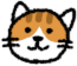
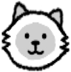
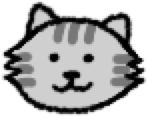
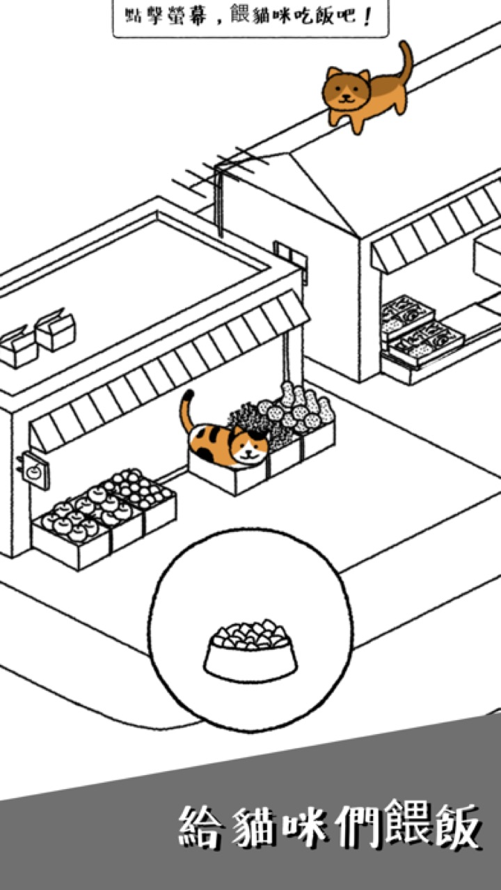
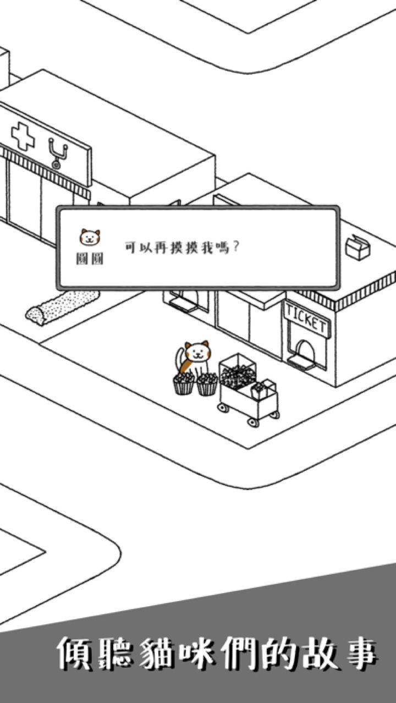
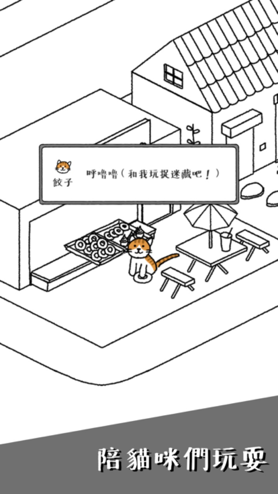
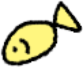

★4.9
App Store 評分



收集60+隻貓咪、養大自己小村的療癒系放置遊戲


★4.9 · 評價71,000+ · 下載10M+ · since 2018



用抽獎券抽新貓咪——普通、稀有、史詩，每隻的長相和習慣都不同。升級時聽到的貓咪碎碎念，是這遊戲最棒的部分。
建築會自動生產小魚。每天幾分鐘，餵餵貓、收收愛心，小村就會長大。廣告只在你想看時出現——沒有強制。
在這座手繪墨線小村裡，唯一的色彩就是貓咪。升級建築、擺放裝飾，把每個角落變成你的風格。
真實發佈在 App Store 上的聲音
"畫風很簡單乾淨，貓咪很可愛，沒有什麼進度壓力，還可以領養多種不同的貓貓，既滿足了貓貓癖也滿足了收集癖。"
"家裡沒辦法養貓咪的！建議下載這個遊戲！裡面超多可愛貓貓！！❤️"
"真的就是純粹的可愛 而且 根本是不用課金的那種 完全免費 你只需要偶爾開起來玩 就會覺得很療癒"
2018年起，由小小獨立工作室用心維護

iOS & Android 免費